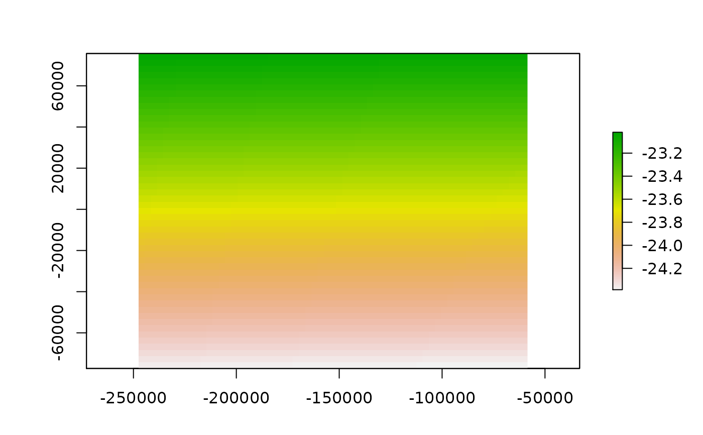

Return a Raster
wrf_raster(
file = file.choose(),
name = NA,
latlon = F,
level = 1,
as_polygons = FALSE,
map,
verbose = FALSE
)wrf file
variable name
project the output in "+proj=longlat +datum=WGS84 +no_defs"
only for 4d data, default is 1 (surface)
logical, true to return a poligon instead of a raster
(optional) file with lat-lon variables and grid information
display additional information
{
wrf <- paste(system.file("extdata", package = "eixport"),
"/wrfinput_d02", sep="")
r <- wrf_raster(file=wrf, name='XLAT')
library(raster)
plot(r, axes = TRUE)
}
#> Loading required package: sp
